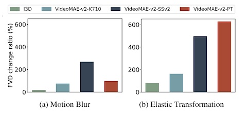
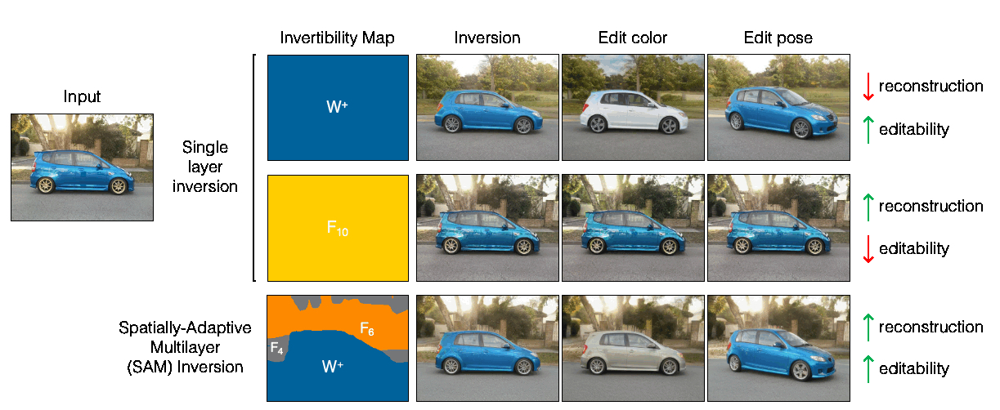
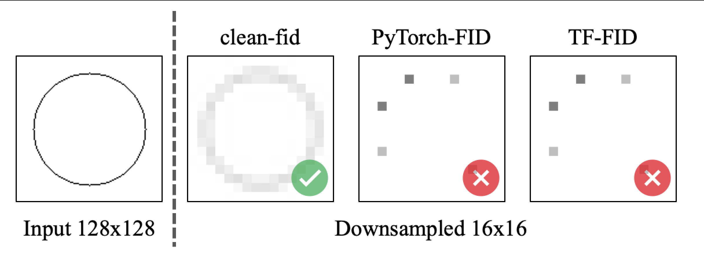
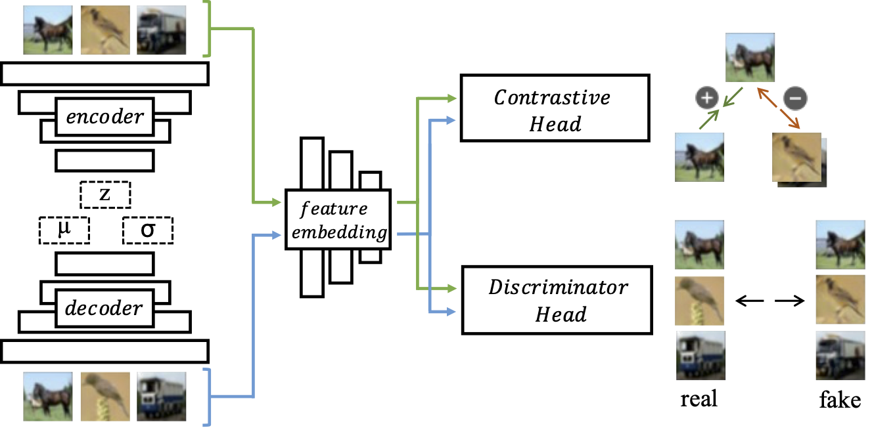
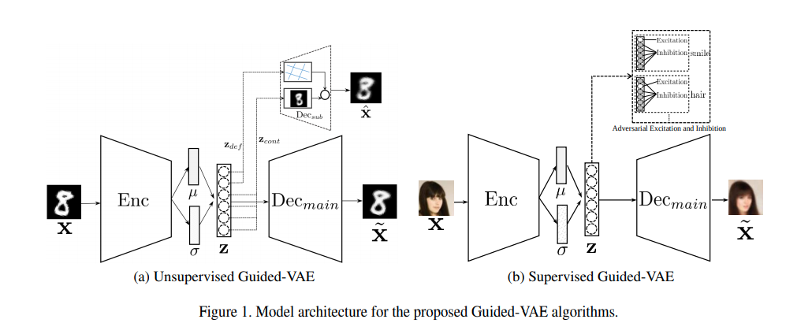
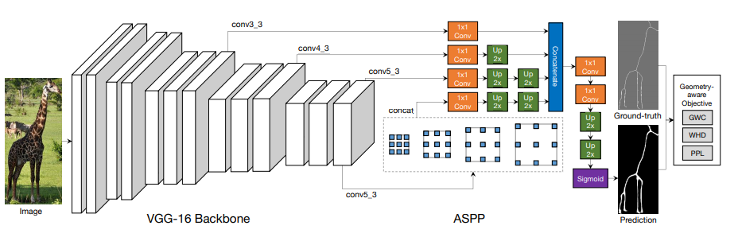
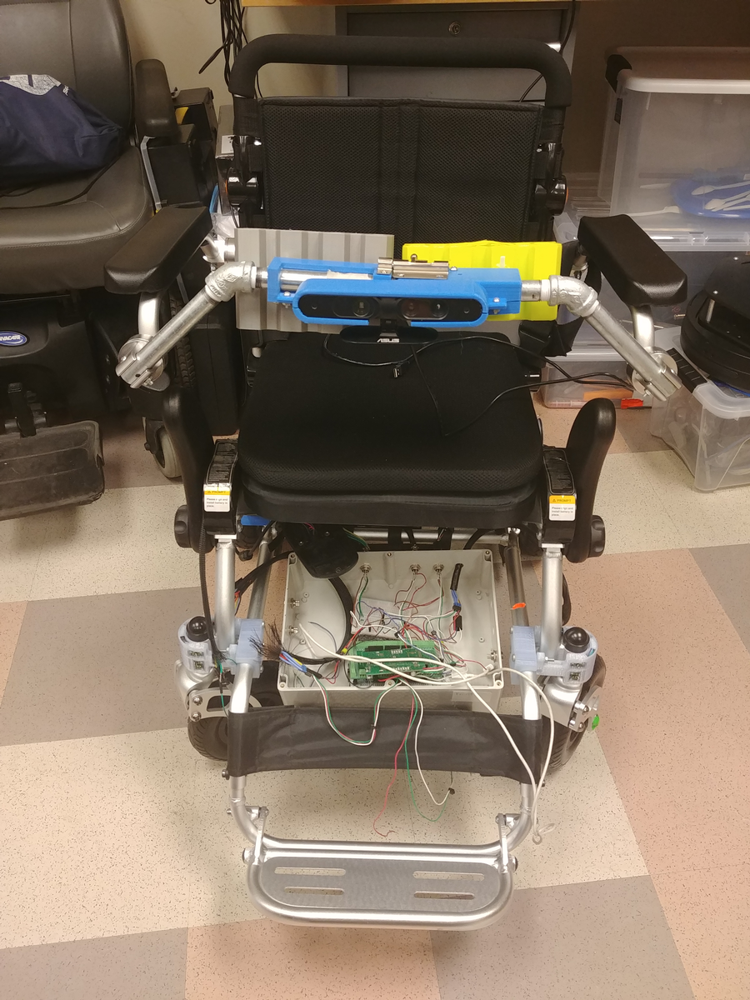

Gaurav Parmar
I am a PhD student at Carnegie Mellon University.
I got my undergraduate degree in Computer Science (with highest honors)
from University of California, San Diego in 2020.
My research interests include Computer Vision, Machine Learning and Robotics.
I am co-advised by Jun-Yan Zhu and Srinivasa Narasimhan .
Prior to this, I have worked with Zhuowen Tu and Jack Silberman at UCSD.
I spent two wonderful summers (2021 and 2022) interning at Adobe Research with
Krishna Kumar Singh ,
Yijun Li ,
Cynthia Lu , and
Richard Zhang .
One-Step Image Translation with Text-to-Image Models
Gaurav Parmar ,
Taesung Park ,
Srinivasa Narasimhan ,
Jun-Yan Zhu
arXiv, 2024
[Paper] |
[GitHub] |
[Demo]

On the Content Bias in Fréchet Video Distance
Songwei Ge ,
Aniruddha Mahapatra ,
Gaurav Parmar ,
Jun-Yan Zhu ,
Jia-Bin Huang
CVPR, 2024
[Webpage] |
[Paper] |
[GitHub]
CoFRIDA: Self-Supervised Fine-Tuning for Human-Robot Co-Painting
Peter Schaldenbrand ,
Gaurav Parmar ,
Jun-Yan Zhu ,
James McCann ,
Jean Oh
ICRA 2024
Best Paper Award (HRI), Best Demo Award Finalist
[Paper] |
[GitHub] |
[Webpage]
Zero-shot Image-to-Image Translation
Gaurav Parmar ,
Krishna Kumar Singh ,
Richard Zhang ,
Yijun Li ,
Jingwan (Cynthia) Lu ,
Jun-Yan Zhu
SIGGRAPH, 2023
[Webpage] |
[Paper] |
[GitHub]

Spatially-Adaptive Multilayer Selection for GAN Inversion and Editing
Gaurav Parmar ,
Yijun Li ,
Jingwan (Cynthia) Lu ,
Richard Zhang ,
Jun-Yan Zhu ,
Krishna Kumar Singh
CVPR, 2022
[Webpage] |
[Paper] |
[GitHub]

On Aliased Resizing and Surprising Subtleties in GAN Evaluation
Gaurav Parmar ,
Richard Zhang ,
Jun-Yan Zhu
CVPR, 2022
[Webpage] |
[Paper] |
[GitHub]

Dual Contradistinctive Generative Autoencoder
Gaurav Parmar , Dacheng Li ,
Kwonjoon Lee ,
Zhuowen Tu
CVPR , 2021
[Webpage] |
[Paper] |
[GitHub]

Guided Variational Autoencoder for Disentanglement Learning
Zheng Ding* , Yifan Xu* ,
Weijian Xu , Gaurav Parmar ,
Yang Yang , Max Welling ,
Zhuowen Tu
CVPR , 2020

Geometry-Aware End-to-End Skeleton Detection
Weijian Xu , Gaurav Parmar , Zhuowen Tu
British Machine Vision Conference , 2019

Autonomous Smart Wheelchair: A Social Solution for Individual Need
Isabella Gomez ,
Gaurav Parmar ,
Samarth Aggarwal ,
Nathaniel Mansur ,
Alexander Guthrie
CHI Conference on Human Factors in Computing Systems EA , 2019


{kind=link}